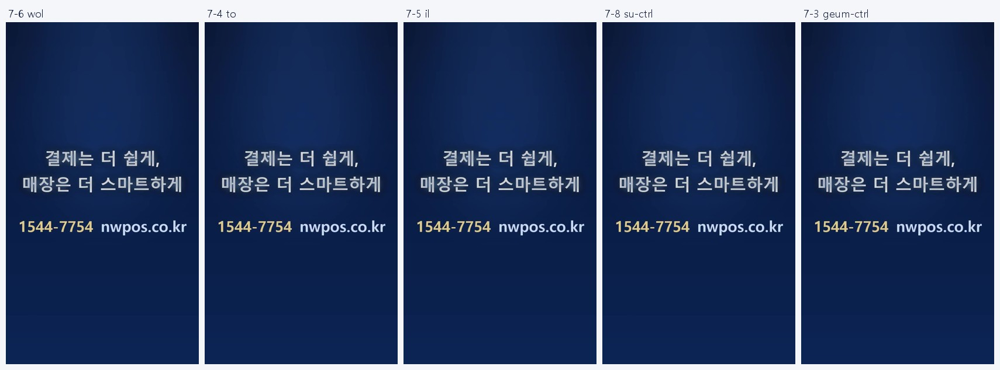
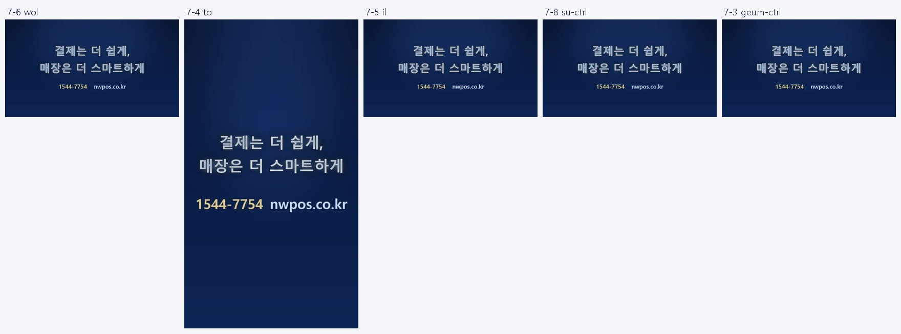
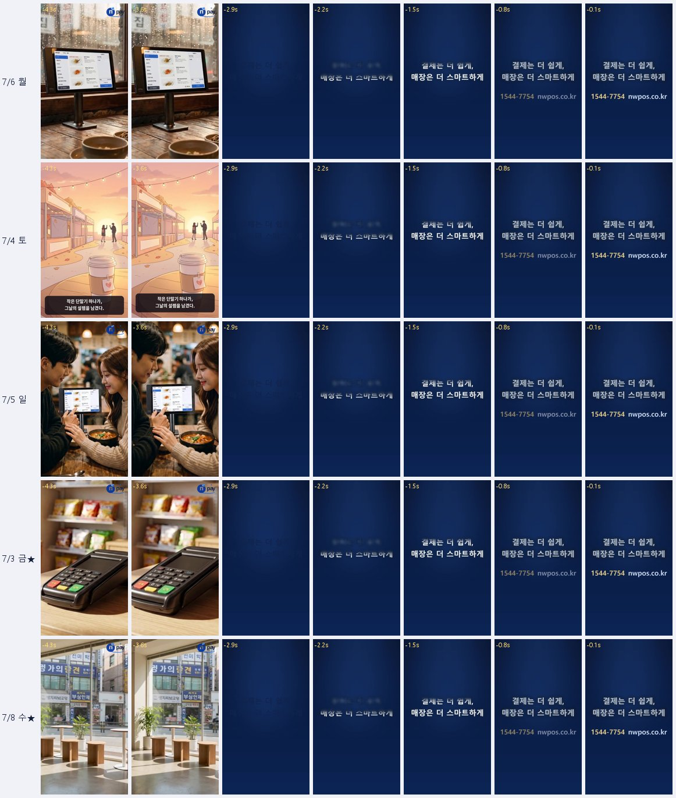

전무님 말씀대로 월·토·일에 엔딩카드가 없는지, 실제 게시된 인스타·유튜브 영상을 직접 내려받아 확인했습니다. 그런데 네 가지 모두에서 엔딩카드가 다른 요일과 똑같이 들어가 있었습니다. 아래가 그 증거입니다.
7/6 월 · 7/4 토 · 7/5 일 · 7/8 수 · 7/3 금 — 전부 엔딩카드 있음

7/6 월 · 7/4 토 · 7/5 일 · 7/8 수 · 7/3 금 — 전부 엔딩카드 있음

각 요일 영상의 마지막 ~5초. 모든 요일이 마지막 약 3초 동안 동일하게 엔딩카드가 켜지고 머뭅니다(월·토·일도 동일). 월/토/일만 짧거나 없지 않습니다.
